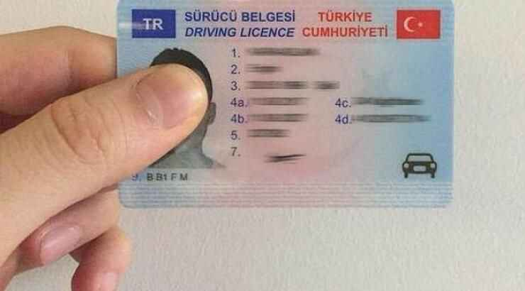
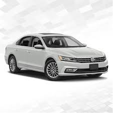

Öztürk Araç Kiralama hizmetiyle ilgili en çok merak edilen soruları ve detaylı yanıtlarını aşağıda bulabilirsiniz.

1. Araç Kiralama
-
Kimler araç kiralayabilir?
Geçerli bir sürücü belgesine sahip, minimum 21 yaşında olan ve en az 1 yıllık ehliyet süresi bulunan herkes araç kiralayabilir. Bazı araç grupları için yaş ve ehliyet yılı sınırı daha yüksek olabilir. -
Rezervasyonumu nasıl yapabilirim?
Web sitemiz üzerinden kolayca rezervasyon oluşturabilirsiniz. Araç seçimi yaptıktan sonra iletişim ve sürücü bilgilerinizi girmeniz yeterlidir. -
Rezervasyonu iptal edebilir miyim?
Evet, rezervasyonunuzu iptal etmek için müşteri hizmetlerimizle iletişime geçebilirsiniz. İptal politikamız için lütfen Kullanım Şartları sayfamıza göz atınız. -
Havalimanına teslimat yapıyor musunuz?
Evet, havalimanı teslimat ve iade hizmetimiz mevcuttur. Rezervasyon sırasında bu seçeneği belirtebilirsiniz.
2. Ödeme ve Depozito
-
Ödeme yöntemleri nelerdir?
Kredi kartı ve banka kartı ile online veya ofisimizde ödeme yapabilirsiniz. Nakit ödeme seçenekleri için lütfen iletişime geçiniz. -
Depozito ne kadar ve nasıl alınır?
Araç grubuna göre değişen tutarlarda kredi kartınızdan provizyon (blokaj) alınır. Araç sorunsuz şekilde iade edildiğinde bu tutar kaldırılır. -
Fiyatlara neler dahil?
Fiyatlara KDV, zorunlu trafik sigortası ve belirli kilometre sınırı dahildir. Ek hizmetler ve ek sigortalar ayrıca ücretlendirilir.
3. Kullanım ve Sorumluluklar
-
Aracı başka biri kullanabilir mi?
Aracı, sözleşmede adı geçen ek sürücüler de kullanabilir. Ek sürücüler için ek ücret alınabilir ve kimlik/ehliyet bilgileri gereklidir. -
Kiralama süresi boyunca ceza veya hasar olursa ne olur?
Tüm trafik cezaları ve kiralama süresince oluşabilecek hasarlardan kiracı sorumludur. Sigorta kapsamı dışındaki hasarlar kiracıya aittir. -
Yakıt politikası nedir?
Araçlar teslim alındığı yakıt seviyesiyle iade edilmelidir. Eksik yakıt durumunda ücretlendirme yapılır.

4. Destek ve İletişim
-
Acil bir durumda ne yapmalıyım?
Olası bir kaza, arıza veya acil durumda hemen bizi arayın. 7/24 destek hattımız ile size yardımcı olmaktayız. -
Daha fazla bilgi için nereye başvurabilirim?
Her türlü soru ve öneriniz için cnaosturk34@gmail.com adresinden veya iletişim sayfamızdan bize ulaşabilirsiniz.

Burada bulamadığınız sorular için bizimle iletişime geçmekten çekinmeyin!